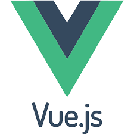
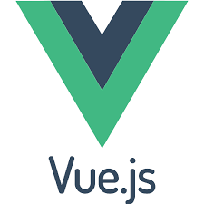

Presentation
Passionate about web development, I have a basic knowledge of HTML, CSS, and JavaScript. Curious and motivated, I enjoy learning and tackling technical challenges. Seeking a first experience to apply my skills and grow in a dynamic environment!
Contact

+34611295370

Programming language

 


Education
Development of front-end and back-end for secure Web and Web Mobile applications. Creation of dynamic and static user interfaces, setting up relational databases, developing SQL/NoSQL data access components, and documenting the deployment of dynamic applications.
Free online training


I have learned the fundamentals of HTML, CSS, and JavaScript through free online courses, and I am ready to apply these skills to contribute to real-world projects.